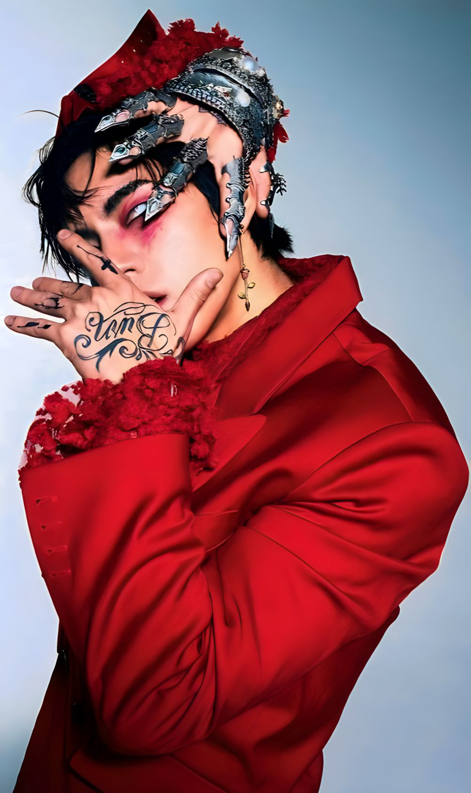
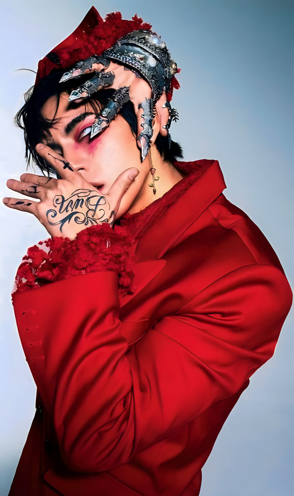

Nacido y criado en Sydney, Australia, DPR IAN desarrolló una afición por la música y la actuación a una edad temprana. Una fascinación infantil con el álbum Discovery de 2001 del dúo electrónico Daft Punk y el musical Cats le dieron una gran conciencia de la importancia de la presentación visual. Cuando era adolescente, aprendió a tocar la batería por sí mismo y formó una banda de heavy metal, tocando y escribiendo canciones de oído. Más tarde se sintió atraído por el b-boying y el breakdance como una forma de autoexpresión física, saltándose clases para tocar en la calle en el centro de Sydney y documentando sus estilos libres en YouTube. Su canal le dio audiencia e incluso lo conectó con su futuro colaborador y amigo de DPR, Hong Da-Bin (también conocido como DPR LIVE).
Después de graduarse de su escuela de artes escénicas en 2008, compró un boleto de ida a Seúl para perseguir sus sueños como bailarín. Debutó como líder y rapero del grupo de K-pop C-Clown en el 2012, actuando como Rome. Su experiencia como ídolo fue efímera y tumultuosa (la unidad se disolvió en 2015), pero le dio una mejor comprensión de la industria. Entonces, cuando volvió a sincronizarse con sus amigos Hong y Scott Kim (DPR REM) para hablar sobre hacer algo juntos, supo que quería que la próxima etapa de su carrera se basara en la libertad creativa, la autenticidad y la comunidad. Esa visión finalmente se convirtió en DPR. "Quiero tener un impacto o nada en absoluto", dice. "Cuando me propongo hacer algo, quiero que la gente gire la cabeza y no mire hacia otro lado".
 
